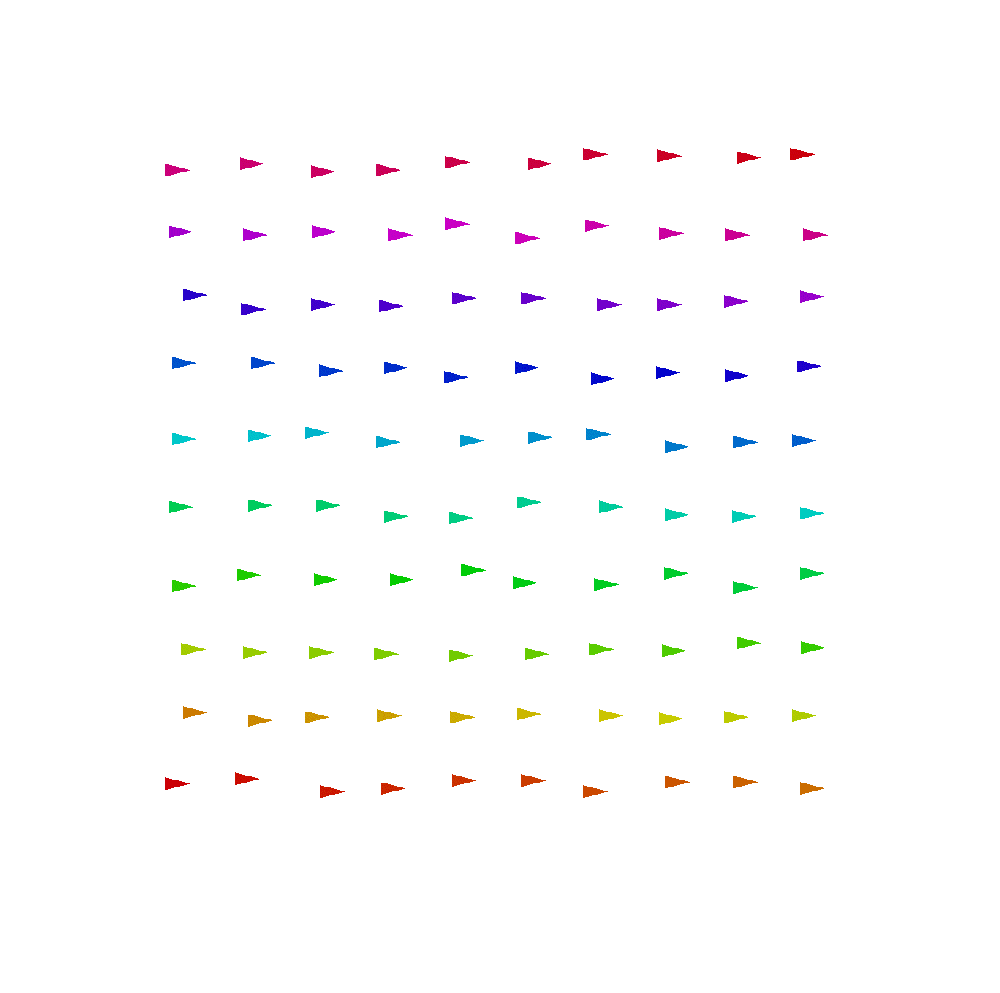
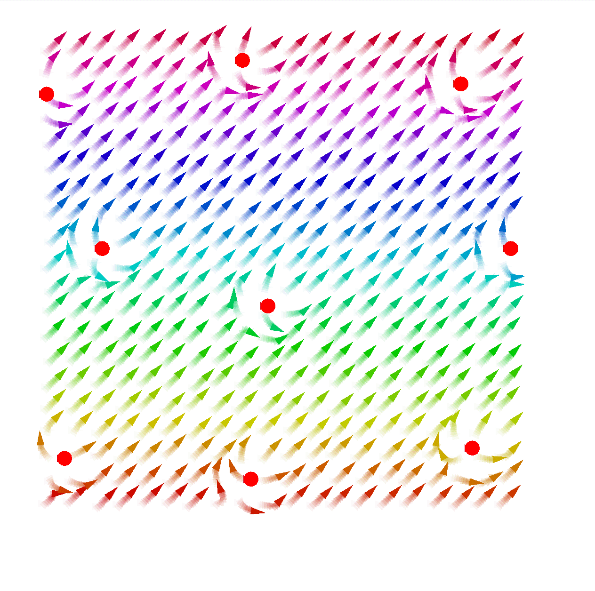
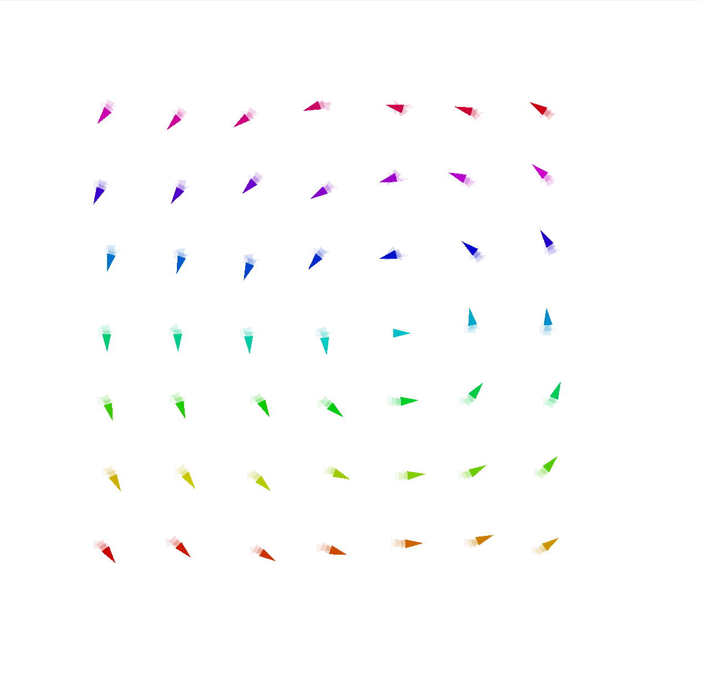
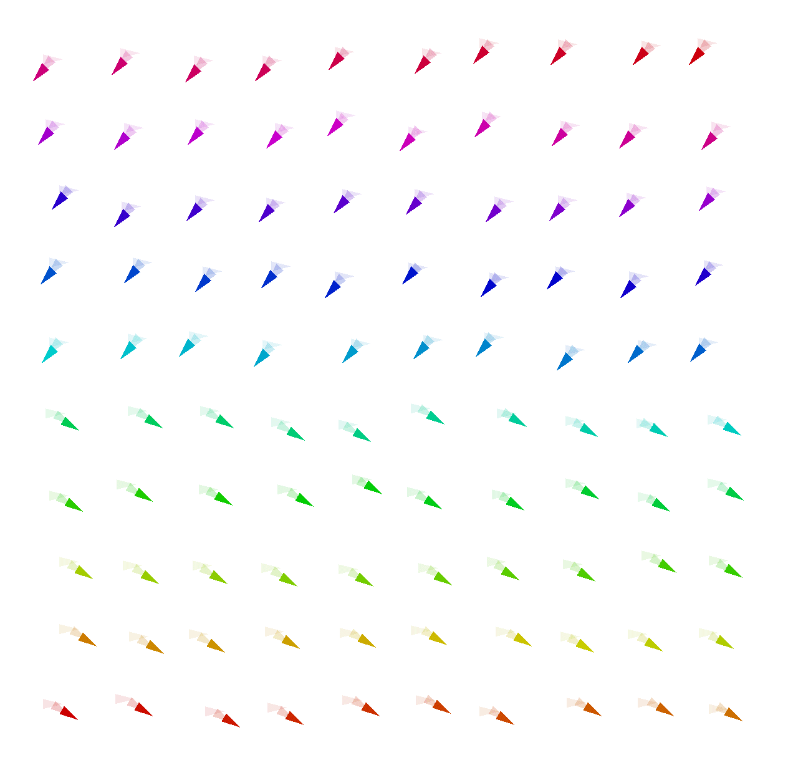
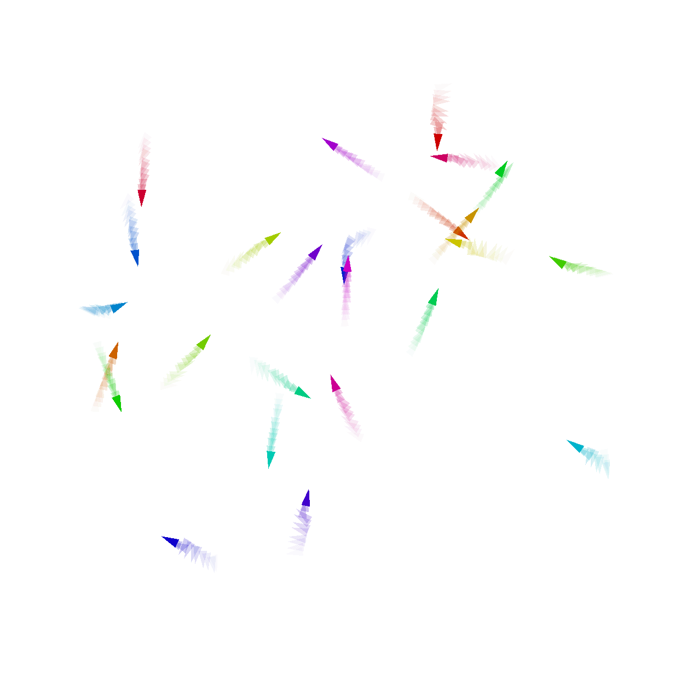
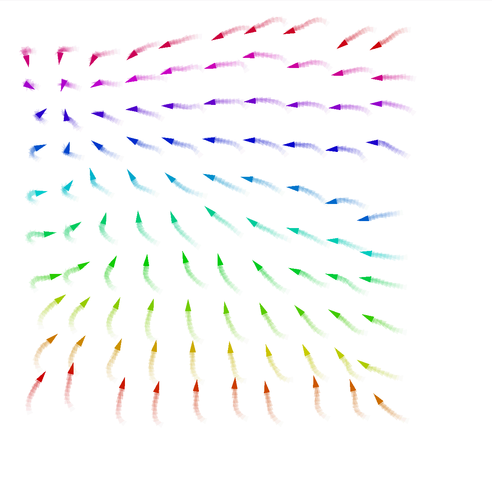
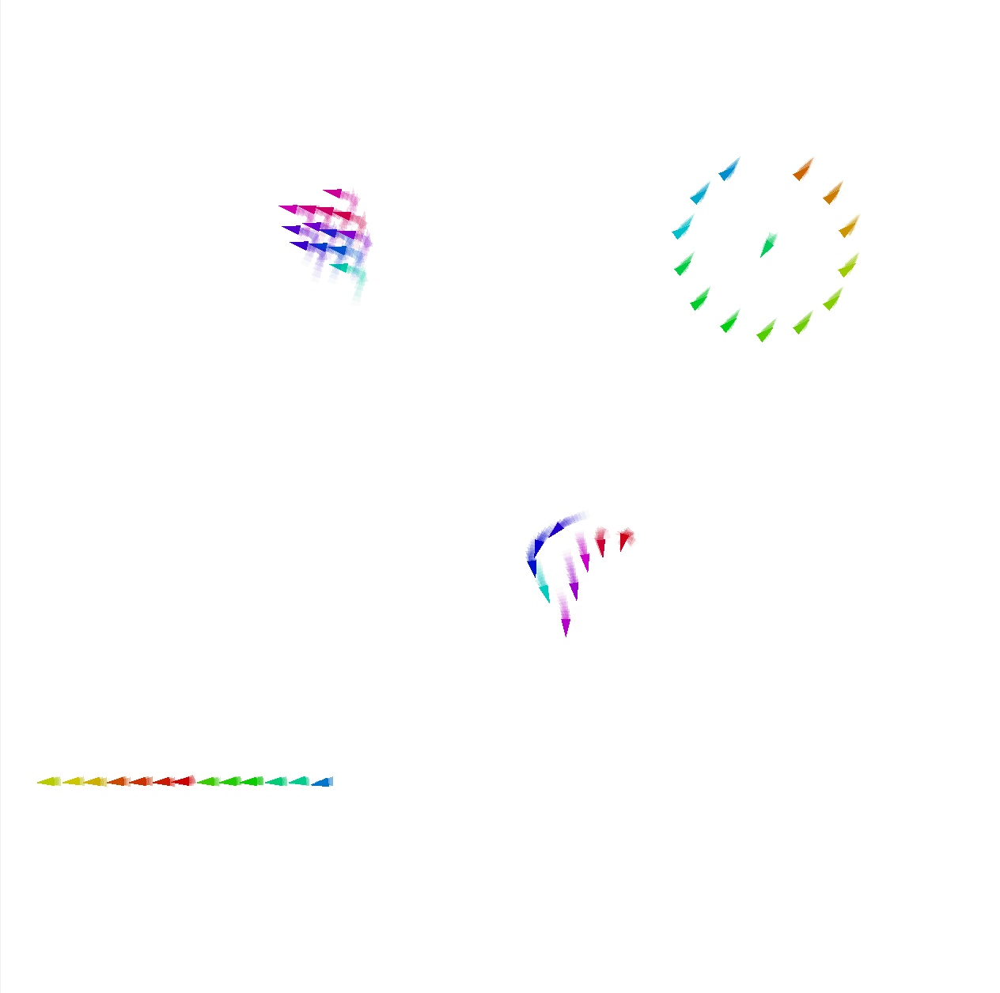
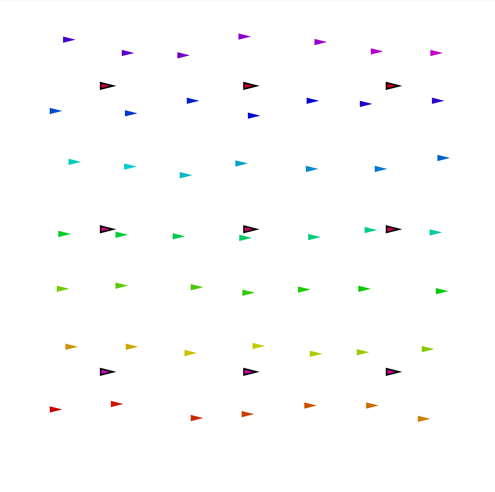

       
Macro Swarm is a field-based libraries for expressing swarm behaviors in a declarative way. It is built on top of the Aggregate computing framework, which is a distributed computing framework for the JVM. Particularly, it is built of top of ScaFi, a scala library for programming aggregate computing systems.